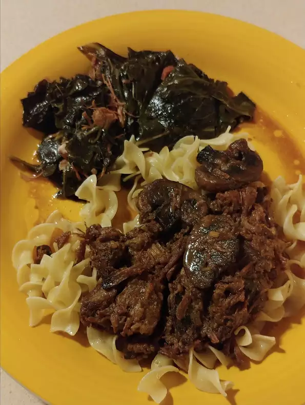

Butter beef

Description
Easy, melt-in-your mouth buttery beef with tons of onion flavor made in your slow cooker! Serve over cooked egg noodles
Ingredients
- 3 pounds cubed beef stew meat
- ½ cup butter
- 1 (1 ounce) envelope dry onion soup mix
Steps
- Place beef and butter in a slow cooker and sprinkle onion soup mix over top.
- Cover, and cook until meat is tender, on Low for 8 hours, or on High for 4 to 5 hours. Stir once or twice during cook time.
See more recipe